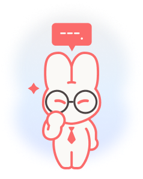

틀린 말은 없는데, 더 듣고 싶진 않다...
" 과묵한 논리형 "
말이 너무
짧거나 건조함
짧거나 건조함
인간적인
매력부족
매력부족
역량은 있으나
태도 부족
태도 부족
당신은 간결하게 핵심만 말하는 경향이 있습니다.
답변이 짧고 논리적이며 실수가 적지만,
감정이나 인간적인 면모가
잘 드러나지 않는다는 단점이 있습니다.
면접관은 당신을
"똑똑한 사람"이라고 느낄 수는 있지만,
"함께 일하고 싶은 사람"으로
이어지긴 어려울 수 있어요.
능력은 분명하지만, 협업에 어울리는는
따뜻함이나 유연함이 덜 전달될 수 있죠.
과묵한 논리형을 위한
업빗의 면접 TIP!
"좋은 생각은 충분합니다.
이젠 그 생각을 당신답게 풀어내야 합니다."
감정을 억지로 만들 필요는 없어요.
자신의 말에
왜 그렇게 생각했는지, 무엇을 느꼈는지
한두 마디만 덧붙여도
면접관은 훨씬 따뜻하게 느낍니다.